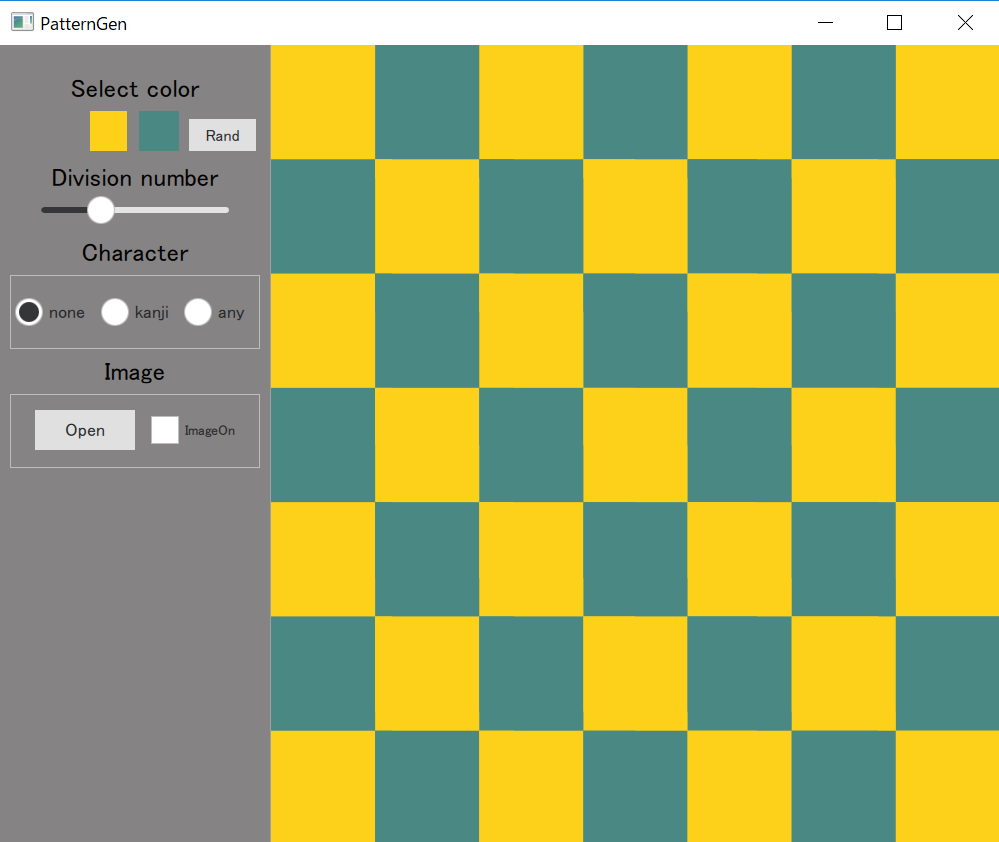
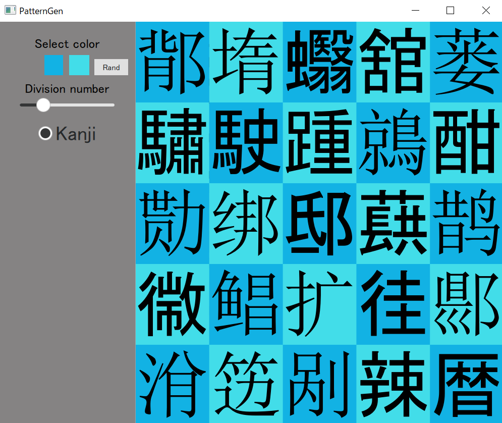
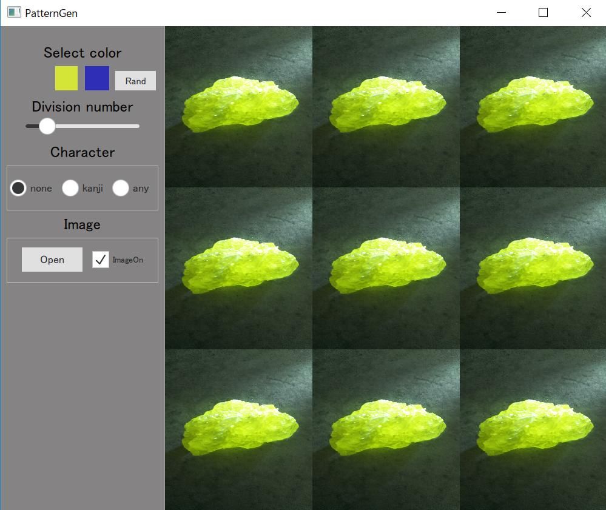
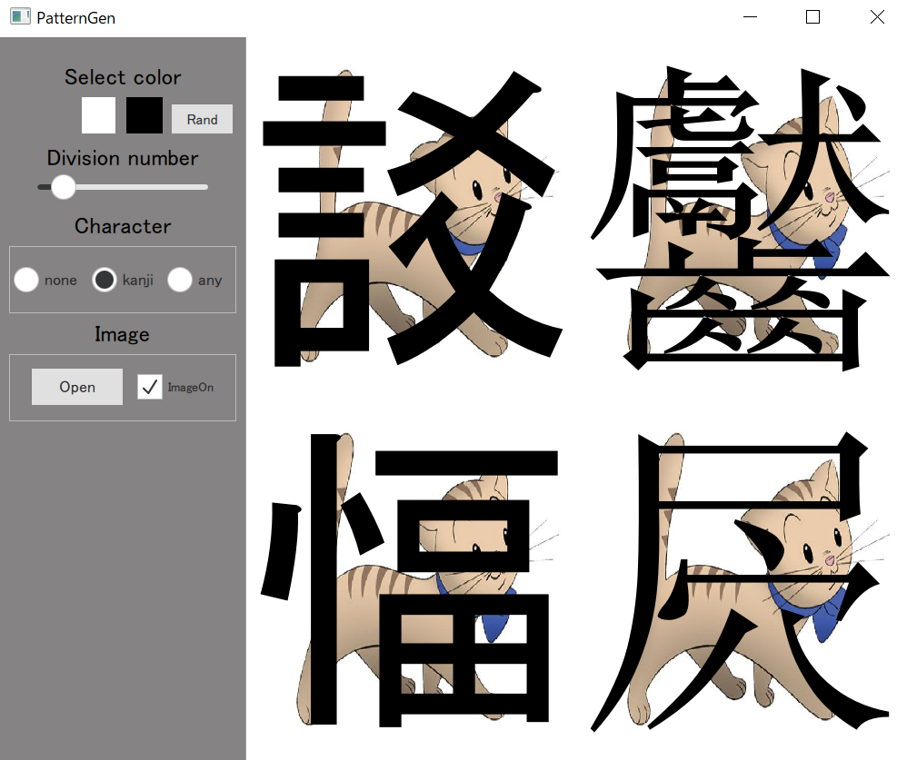
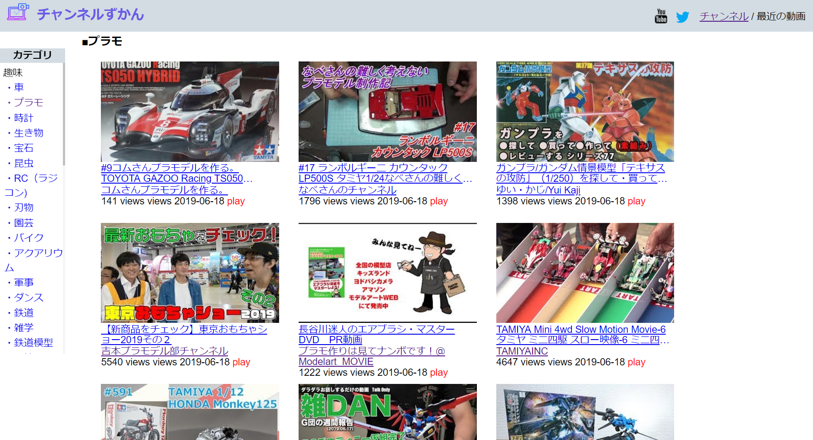

Qt application
-
PatterGen
   This app can generates check pattern with various size,color...etc
github Tweet
無性にカラフルなチェック模様を見たくなるときがあったので作ってみました。様々な色、大きさのチェック模様を作ることができます（チェック以外のパターンも追加するかも）。遊びで漢字や写真も表示されるような機能を入れるとカオスなことになりました。Windows上のQtCreatorで作っています。QtCreatorはデザインモードと通常のエディタの切り替わりが鬱陶しかったです(ui.qmlじゃないといちいち警告が出る)。ノートPCで作ったんですが、こういうの作る用にデスクトップの大きな画面が欲しくなりました。
web application
-
Youtubeチャンネルずかん
下記のYoutubeAPIを使ったアプリの延長で作ってみた。チャンネルのデータをたくさん取ってきてカテゴライズして並べただけ。またそれぞれのチャンネルで1週間以内に投稿された動画を「最近の動画」として埋め込みで見れるモードも作った。さらに定期的にデータを更新し、twitterで更新内容をつぶやくbotも実装した。全ての主要なチャンネルを網羅しきれているわけではないが、チャンネルの総数は2000くらいなっている。データ収集はPython、フロントはPHPで、Herokuにデプロイした。自動更新はheroku schedulerなるアドオンを使用(無料枠しか使わないがクラカ登録が必要)。Webからもデータの更新をしたかったので、管理者ページから行えるようにした。これは非同期でやりたかったのでReact.jsで。
-
Simple Youtube viewer

A simple youtube viewer. You can search videos and get link to uploader's video list
React.jsの勉強がてら作りました。簡易Youtubeビューア。GoogleのYoutubeAPI経由で情報を拾っています。動画の検索、視聴、投稿者の動画リストリンクを得るなどの機能があります。また動画広告が入らないなどのメリットがあります。動画が終わると次の動画を自動で再生します。Tweet -
Stars

A toy by using Canvas API. Stars moves.
Canvas APIで遊んでみました。星達が縦横無尽に動きます。キーボードで操作します。Tweet